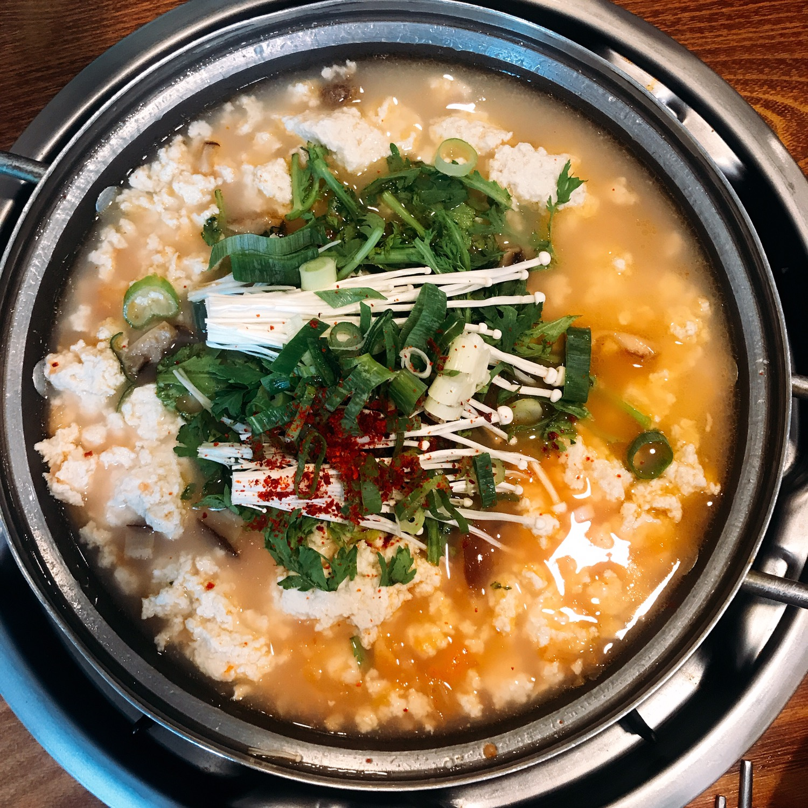
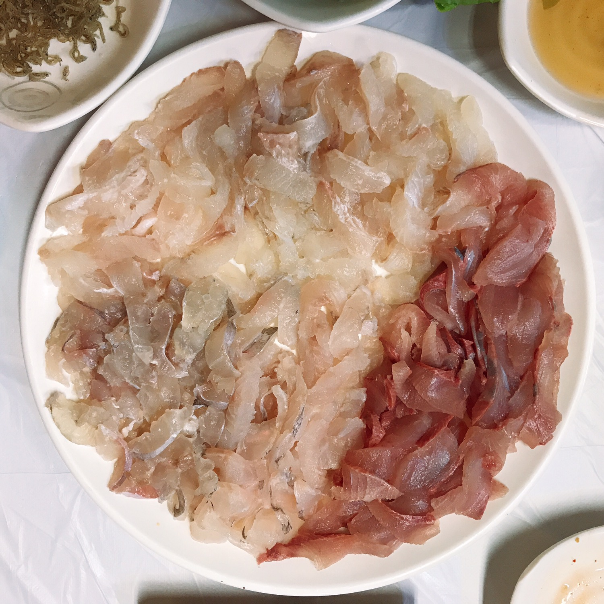

1. 초당순두부

순두부는 마트에서도 쉽게 사서 먹는 음식이지만 강릉에 초당순두부가 유명하다고해서 먹으러갔다.
일반 순두부와 비슷하지만 몽골몽골하게 덩어리져서 일반 순두부보다 고소하고 너무 맛있었다.
강릉에 갔다면 무조건 초당순두부 먹는거 추천!!!
2. 제철 회

주문진하면 유명한 주문진 수산시장!!
수산시장에서 바로 잡아온 생선들로 회를 떠서 먹어서 그런지 싱싱하고 정말 맛있었다.
일반 횟집 보다 수산시장에서 먹는 회가 더 맛있고 싸요~
다들 꼭 먹고 가세요~